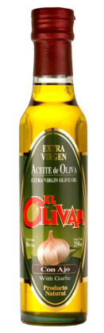
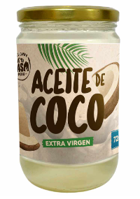
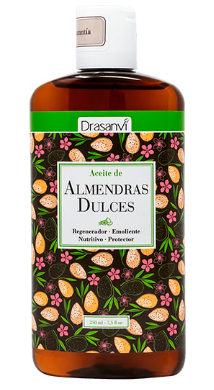
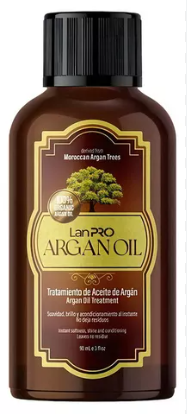
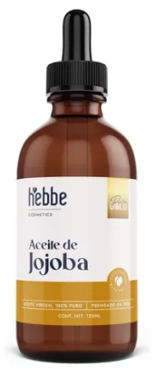

Top 5 Aceites Naturales del 2024
1. Aceite de Oliva Extra Virgen
El aceite de oliva extra virgen es conocido por sus propiedades antioxidantes y su capacidad para mejorar la salud cardiovascular.
2. Aceite de Coco
El aceite de coco es versátil, utilizado tanto en la cocina como en el cuidado de la piel, gracias a sus propiedades hidratantes y antimicrobianas.
3. Aceite de Almendra
El aceite de almendra es popular en el cuidado de la piel y el cabello, aportando suavidad y nutrición profunda.
4. Aceite de Argán
El aceite de argán, conocido como "oro líquido", es valorado por sus beneficios tanto para la piel como para el cabello.
5. Aceite de Jojoba
El aceite de jojoba es ideal para equilibrar la producción de sebo en la piel, siendo muy utilizado en productos de cuidado facial.
Leer más